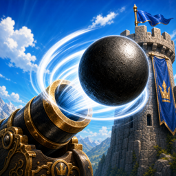
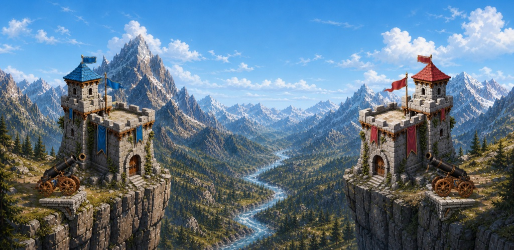
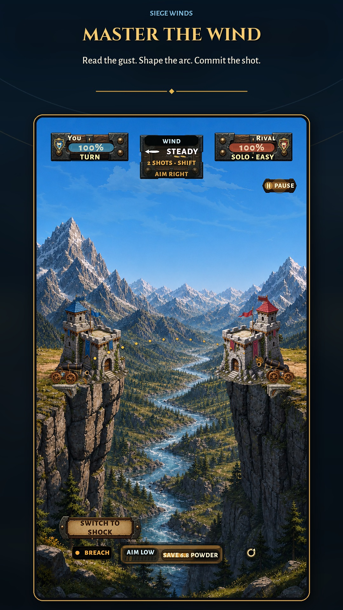
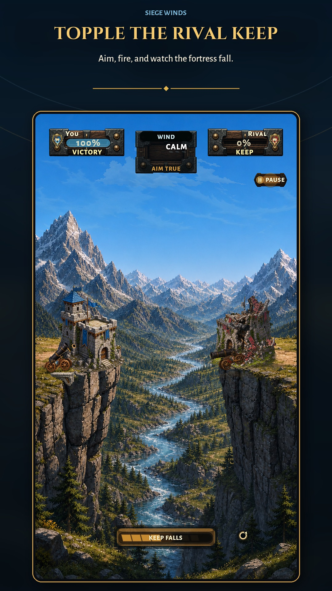
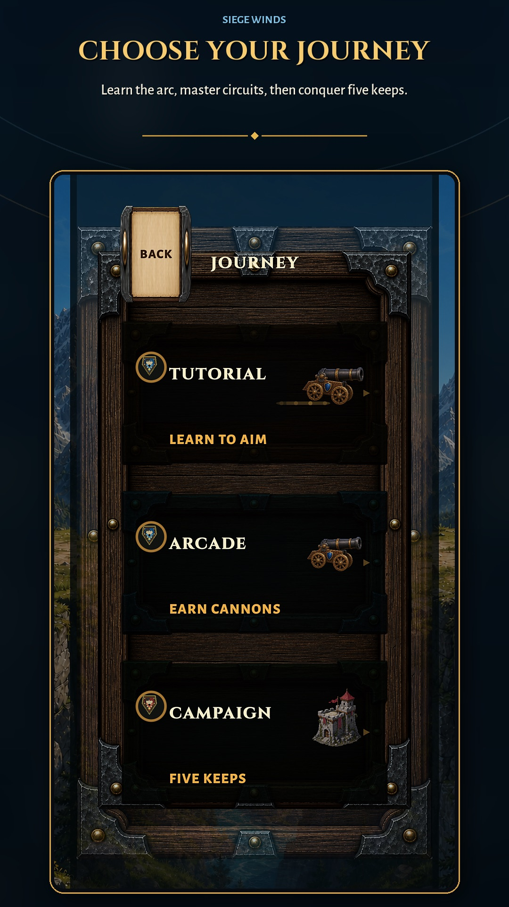
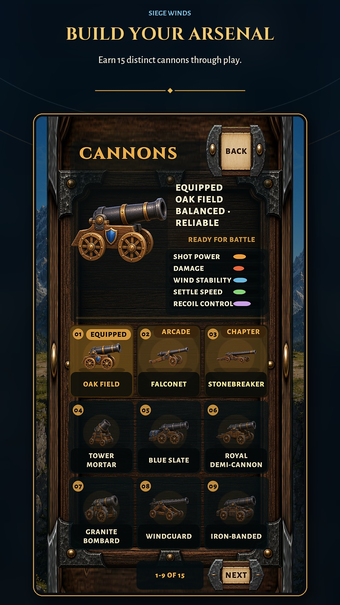

Lis la rafale
Le vent dévie la trajectoire. Observe-le avant de toucher au canon.

Siege Winds
Bientôt sur iOS et Android
Des duels d’artillerie tactiques et rapides où chaque rafale change le tir — et chaque impact transforme le champ de bataille.

Pas de bataille automatique. Pas de hub interminable. Tu lis le terrain, tu choisis ta trajectoire et la physique répond.
Les captures montrent l’aperçu anglais actuellement en développement.
Le vent dévie la trajectoire. Observe-le avant de toucher au canon.
Équilibre angle et poudre pour franchir la pierre, atteindre les faiblesses et préserver ta force.
Relâche, suis le boulet, puis apprends de son point d’impact.

La pierre se fissure, les appuis cèdent et une frappe propre peut ouvrir la voie vers le cœur. Les dégâts restent lisibles, mécaniques et sans gore.
Vise. Tire. Regarde la structure répondre. La brèche que tu ouvres change l’angle du prochain tir — et la prochaine décision.
Siege Winds est conçu comme un jeu mobile complet mais resserré. Ces modes sont prévus pour la sortie ; les services en ligne ne sont pas encore ouverts au public.
Des batailles hors ligne rapides, avec des adversaires lisibles et une difficulté réglable.
Hors lignePasse le même téléphone, transmets le tour et règle la revanche à deux.
Même appareilJoue ton tir, vaque à tes occupations et reviens quand ton rival a répondu.
Prévu pour la sortieDes résultats compétitifs issus des matchs async terminés, sans avantage de classement payant.
Prévu pour la sortieConstruis ton arsenal grâce à des victoires claires, aux chapitres de campagne et à la maîtrise. Chaque canon possède une silhouette et un comportement lisibles ; le classement reste sans avantage payant.


Siege Winds est conçu pour mériter ta confiance : jeu tactique propre, progression déterministe, monétisation halal-friendly et aucun système vendant un meilleur résultat compétitif.
Siege Winds est en développement pour iPhone et Android. Les liens Store et la date de sortie apparaîtront ici uniquement lorsqu’ils seront réels.
Bientôt disponible · iOS et Android